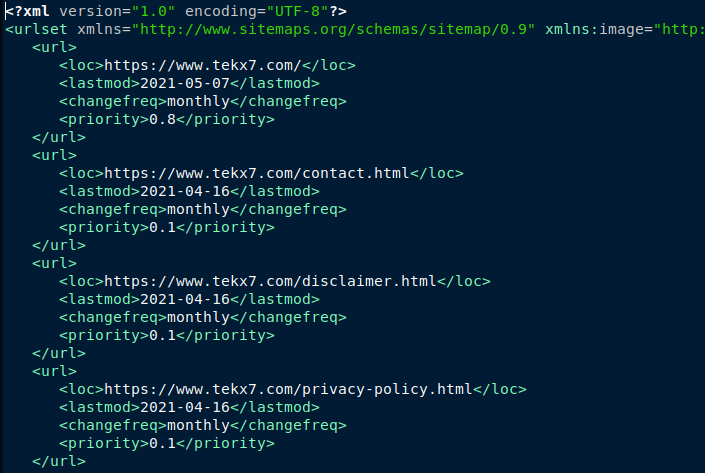

Snippet for Removing .html Extension
Removing the .html extension from URLs on a website can create cleaner
and more user-friendly URLs. It enhances the readability and
aesthetics of the website's links, making them easier for visitors to
remember and share. Additionally, shorter URLs can have a positive
impact on search engine optimization (SEO) by potentially improving
the website's ranking in search results.
With this configuration, URLs like example.com/about.html will be
accessible with example.com/about. The rule checks if the requested
URL without the .html extension exists as a file, and if so, it issues
a 301 permanent redirect to the URL without the extension, effectively
removing it from the user-visible URL.
Snippet of a 301 Page Redirect
Redirecting a file on a website is necessary when you change the
file's location or name, ensuring visitors land on the correct page.
It also helps maintain SEO rankings and prevents broken links,
providing a seamless user experience.
To redirect oldpage.html to newpage.html using .htaccess, you can use
the rule below.
With this configuration, when a user tries to access
example.com/oldpage.html, they will be automatically redirected to
example.com/newpage.html. The 301 status code indicates a permanent
redirect, which is useful for search engines to update their indexes
with the new URL.
Redirecting HTTP to HTTPS is essential for security and data protection. HTTPS encrypts the data exchanged between a website and its users, preventing eavesdropping and ensuring a secure connection. It also improves trustworthiness and SEO rankings, as search engines favor secure websites.
Redirecting a file on a website is necessary when you change the
file's location or name, ensuring visitors land on the correct page.
It also helps maintain SEO rankings and prevents broken links,
providing a seamless user experience.
This rule checks if the request is using HTTP (RewriteCond %{HTTPS} off) and redirects it to the corresponding HTTPS version (https://%{HTTP_HOST}%{REQUEST_URI}). The [R=301] flag indicates a permanent redirect, and the [L] flag stops processing other rules if this one matches. Remember to save the changes to the .htaccess file and upload it to the root directory of your website for the redirect to take effect.
To redirect HTTP to HTTPS using .htaccess, you can use the following rule:
FAQ
What is .htaccess File Used for ?
The .htaccess file is a powerful configuration file used on web
servers running Apache HTTP Server software. Its primary purpose is
to provide per-directory or per-file-based configuration, allowing
website administrators to override default server settings without
modifying the main server configuration file (httpd.conf). This
flexibility makes it useful, especially in shared hosting
environments where users have limited access to server
configurations.
-
1. URL Rewriting and Redirection: One of the most common
uses of .htaccess is to rewrite URLs and set up redirects.
This enables website owners to create user-friendly and
SEO-friendly URLs or redirect old URLs to new ones. For
example, you can convert example.com/product.php?id=123 into
example.com/product/123/, making it more readable and search
engine-friendly.
-
2. Access Control: .htaccess allows administrators to
control access to specific directories or files based on
various criteria, such as IP addresses, user authentication,
or specific HTTP headers. This feature is valuable for
restricting access to sensitive areas of a website or
protecting files from unauthorized access.
-
3. Custom Error Pages: Website owners can define custom
error pages using .htaccess. When a visitor encounters an
error, such as a 404 Page Not Found, the server displays a
custom-designed error page instead of the default one. This
helps maintain a consistent branding and user experience
across the site.
-
4. MIME Type and File Handling: .htaccess can be used to
specify how the server handles different file types. This
includes setting appropriate MIME types for files, which
informs the browser how to handle specific file formats.
Proper MIME types are essential for ensuring correct
rendering of files, such as images, videos, or downloadable
content.
-
5. Caching and Compression: Using .htaccess, administrators
can control caching settings and enable compression for
files served by the server. Caching reduces server load and
improves website performance, while compression reduces the
size of files transmitted over the network, leading to
faster loading times for visitors.
-
6. Security Enhancements: Various security-related
configurations can be implemented through .htaccess, such as
preventing directory browsing, blocking specific IP
addresses or user agents known for malicious activities, and
enabling SSL/TLS for secure connections.

Is .htaccess Necessary ?
The .htaccess file is not always necessary for every website, but it
can be highly beneficial in certain scenarios. Its main purpose is
to allow directory-level configurations, enabling users to override
default server settings without altering the main server
configuration file.
The necessity of using .htaccess depends on the web hosting
environment and the level of control granted to the user. In shared
hosting setups, where users often lack access to the main server
configuration, .htaccess becomes crucial for making important
customizations.
However, in cases of dedicated server hosting or when the required
functionalities can be achieved through server-level configurations,
the use of .htaccess may be optional.
The advantages of .htaccess include URL rewriting, access control,
custom error pages, MIME type handling, caching, compression, and
security enhancements. Its versatility makes it a valuable tool for
web developers and administrators seeking fine-grained control over
their websites.
Ultimately, whether .htaccess is necessary depends on the specific
requirements and constraints of the website's hosting environment.
Where Should I Create the .htaccess
File?
The .htaccess file should be created in the directory
where you want its configurations to take effect. If you want
specific settings to apply to a particular folder or file, place the
.htaccess file inside that directory. Alternatively, if
you want its configurations to affect the entire website, you can
place it in the root directory of your website.
It's essential to note that the .htaccess file's
effects are recursive, meaning that the configurations in a parent
directory will also apply to all the subdirectories unless
overridden by a new .htaccess file in a subdirectory.
Always ensure that you name the file correctly as
.htaccess (with a leading dot) and that it's saved as
plain text. Additionally, be cautious when editing the file, as
incorrect configurations could lead to issues with your website.
Make a backup of the original file before making any changes.
How do I Manually Create a
.htaccess File ?
Creating a .htaccess file manually is a straightforward
process. First, open a text editor (e.g., Notepad on Windows or
TextEdit on Mac) and create a new file.
Next, add your desired configurations to the file, each on a new
line. Save the file as .htaccess (with the leading dot)
and ensure it's saved as plain text (not a rich text format).
Before uploading the file to your website's server, ensure that you
place it in the correct directory. If you want its configurations to
apply to a specific folder or file, upload it to that directory. To
affect the entire website, upload it to the root directory.
After uploading, verify that the file's permissions are set
correctly to allow the web server to read it. You can now see the
changes take effect on your website, such as URL rewrites or custom
error pages.
What is the Default .htaccess File
?
By default, most web servers do not have a pre-existing
.htaccess file in their directories. The file is
typically created by website administrators when they need to
override default server configurations or implement specific
settings for their site.
The absence of a default .htaccess file allows the
server to use its standard configuration, defined in the main server
configuration file (e.g., httpd.conf for Apache
servers). This ensures a consistent and secure environment for all
websites hosted on the server.
Website administrators can manually create a new
.htaccess file in any directory where they want to
apply custom configurations. Once the file is created and uploaded
to the server, it can contain various directives to modify the
server's behavior, such as URL rewriting, access control, or error
handling.
As the .htaccess file is specific to the Apache web
server, other web servers like Nginx may have different approaches
to handle similar configurations, and they may not use a
.htaccess file at all.
What is the Content of the
.htaccess File ?
For examples of .htaccess content, follow the link to examples
above:
Snippet of 404 page redirect
Snippet of removing .html extension
Snippet of 301 page redirect
Snippet of HTTP to HTTPS redirect
How do I Download a .htaccess File
from a Website ?
To download a .htaccess file from a website, you need
access to the website's server or file system. Follow these steps:
1. Connect to the website's server using FTP (File Transfer
Protocol) or SFTP (Secure File Transfer Protocol) credentials. You
can use an FTP client like FileZilla or use the file manager
provided by your web hosting control panel.
2. Navigate to the directory where the .htaccess file
is located. It is typically found in the root directory or in the
specific directory where you want its configurations to apply.
3. Right-click on the .htaccess file, and select
"Download" or "Download to local" from the context menu (if using an
FTP client). If using a web hosting control panel file manager, look
for a "Download" button or similar option.
4. Save the downloaded file to your local computer. You can choose
the location and name for the file as you wish.
Keep in mind that not all websites make their
.htaccess files publicly accessible. If you can't find
or access the file, the website owner may have restricted access to
it.
How Do I Edit the .htaccess File ?
To edit the .htaccess file, follow these steps:
1. Connect to your website's server using FTP or SFTP credentials.
You can use an FTP client like FileZilla or the file manager
provided by your hosting control panel.
2. Navigate to the directory where the .htaccess file
is located. It's usually in the root directory or in the specific
folder you want to modify.
3. Right-click on the .htaccess file and select "Edit"
(if using an FTP client). If using a control panel file manager,
look for an "Edit" option or open the file in a text editor.
4. Make the necessary changes to the file's content. After editing,
save the file with the changes.
5. Upload the edited .htaccess file back to the server,
replacing the original file if prompted.
Remember to back up the original file before making any changes, as
incorrect configurations can cause issues with your website.
How to Redirect HTTP to HTTPS Using
.htaccess ?
To redirect HTTP to HTTPS using .htaccess, follow these steps:
1. Connect to your website's server using FTP or SFTP credentials.
2. Locate or create the .htaccess file in the root
directory of your website.
3. Open the .htaccess file in a text editor.
4. Enable the rewrite engine by adding
RewriteEngine On.
5. Add a redirect rule to check if HTTPS is off and redirect to the
secure HTTPS version.
6. Save the changes to the .htaccess file and upload it
back to the server.
After these steps, your website will automatically redirect all HTTP
requests to the secure HTTPS version, ensuring a safe and encrypted
connection for your visitors.
Check out more: Snippet of HTTP to HTTPS redirect